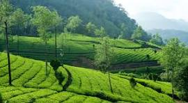

Hill Stations of Kerala
Kerala is home to some of India’s most breathtaking hill stations known for their cool climate, lush greenery, and mist-covered mountains. These destinations provide the perfect escape from busy city life and offer a refreshing environment surrounded by tea gardens, waterfalls, and wildlife.

Munnar is the most famous hill station in Kerala, known for its rolling tea plantations and pleasant weather. Another popular region is Wayanad, rich in forests, wildlife, and trekking trails. Idukki also stands out with its dams, valleys, and panoramic viewpoints.

These hill stations are ideal for nature lovers, honeymooners, and adventure enthusiasts. Their scenic beauty and peaceful surroundings make them the perfect destinations for relaxation and rejuvenation.